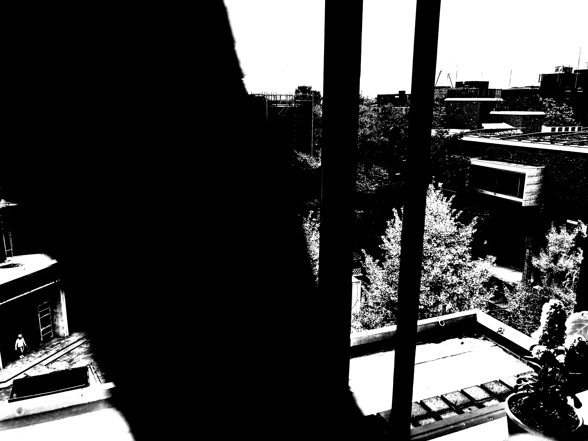
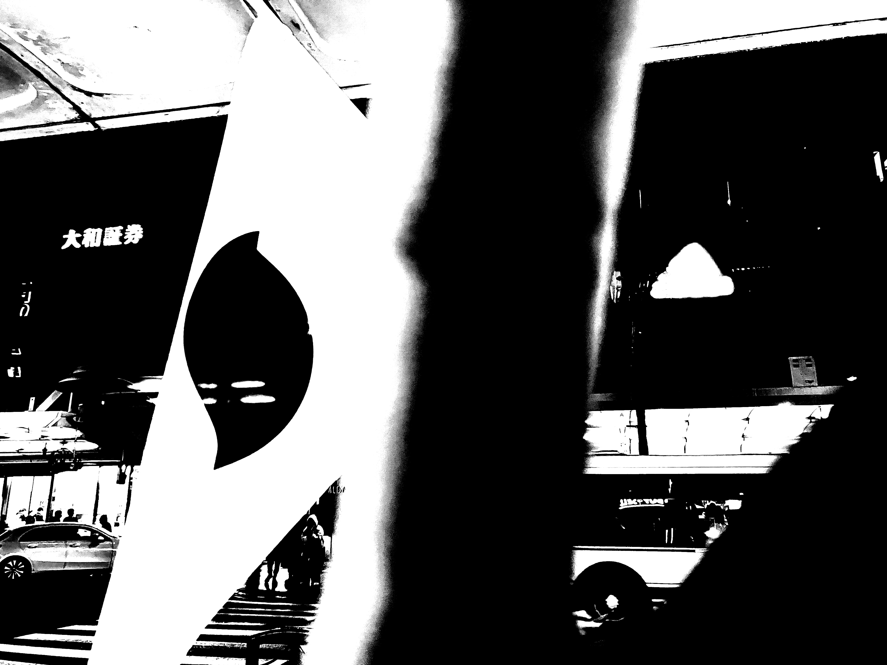
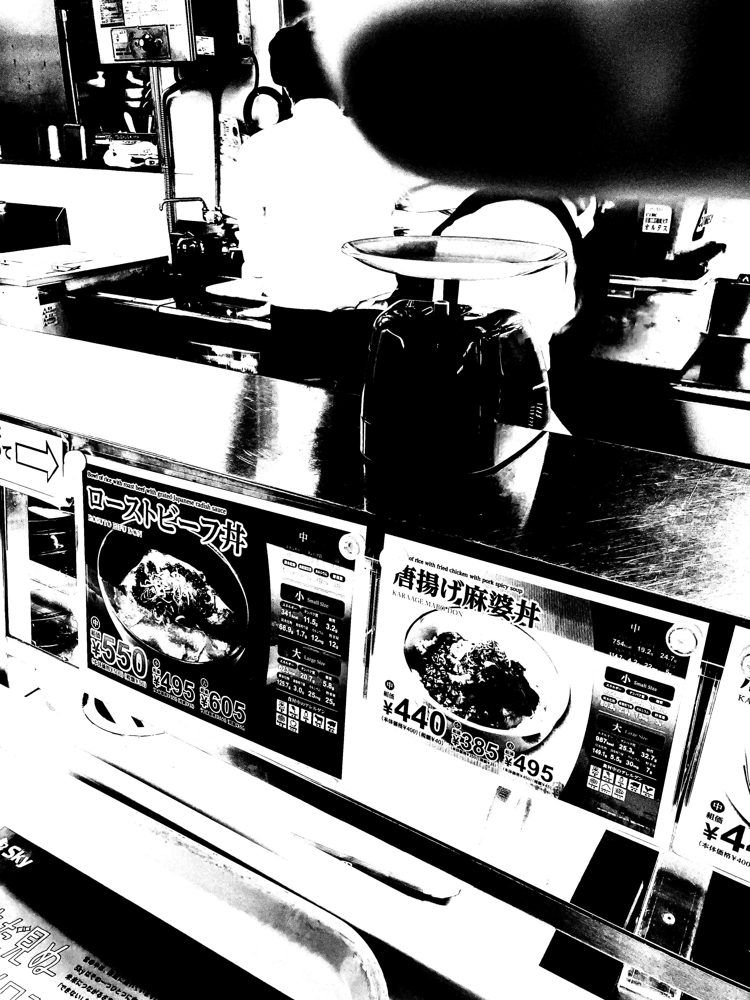
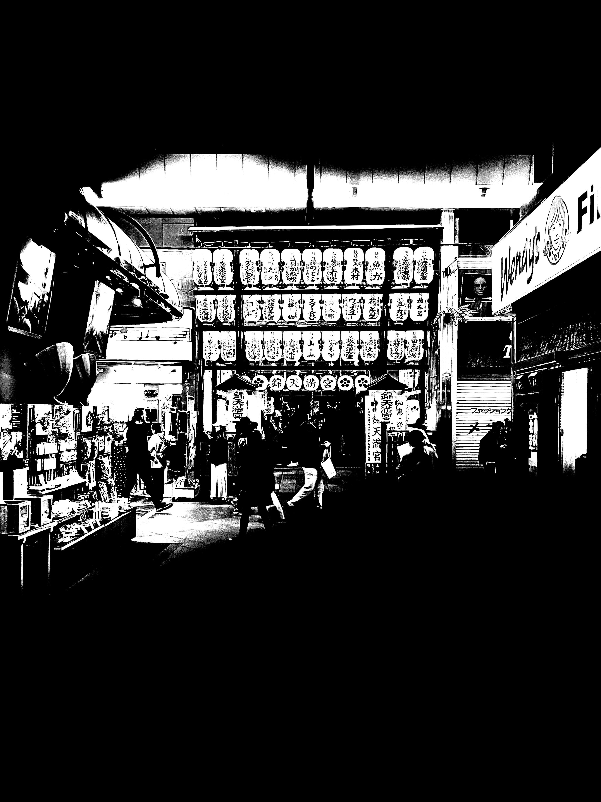
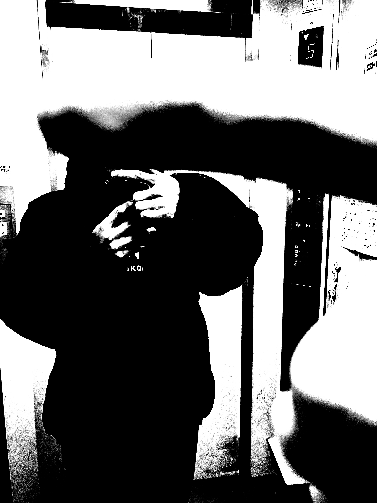

11月、終わるよ？（と今週の写真）
2024/11/27
今月、なにかできた？
おはようございます、今週はパソコンとにらめっこしてたらもう月末って感じです。
月初に何となく「今月、自分を変えないとヤバいかも」と漠然と思って始まった11月ですが、何か変えることが出来たのかな。そもそもどこの何を変えるのかみたいな話もあるし変な直感を信じすぎな節はある。
そんな話はさておき今週撮った写真でも流しておこうかな、、、。
   で、今月なにを変えれたんですか？
何変えたかな、、、あでもvlogやめた、あと昼ごはん遠出するのもやめたな。さすがに歩いて撮って編集する時間とれなくなってきた。
なんならカメラも意識的に持たないようにしてる。
後は直近だとSNS開かないようにしてたとか。前々からうっすら思ってたけど自分のSNSの使い方って発信したいだけすぎてよく分かんないんすよねぇ。
発信したいとは言いつつも再生数は気にしてないってのもなんか納得できないし。
それ言うとこのブログもそうだしなぁ(・ω・)
そんなこんなで色んなモノとの距離感とか考える期間になりました。ちなみに、、、距離感って言葉、いいよね。うん。結局どれも距離感だよな～とか思うこの頃。
一方的発信マンが発信やめると言いたいこと渋滞して逆に言うのめんどくさくなる。これが一番の気づきですかね。
以上！今年最後まで頑張ろうと思います。